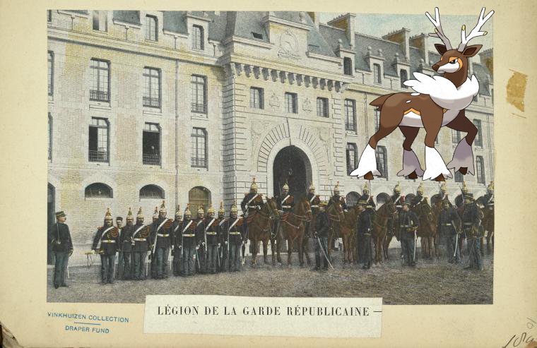
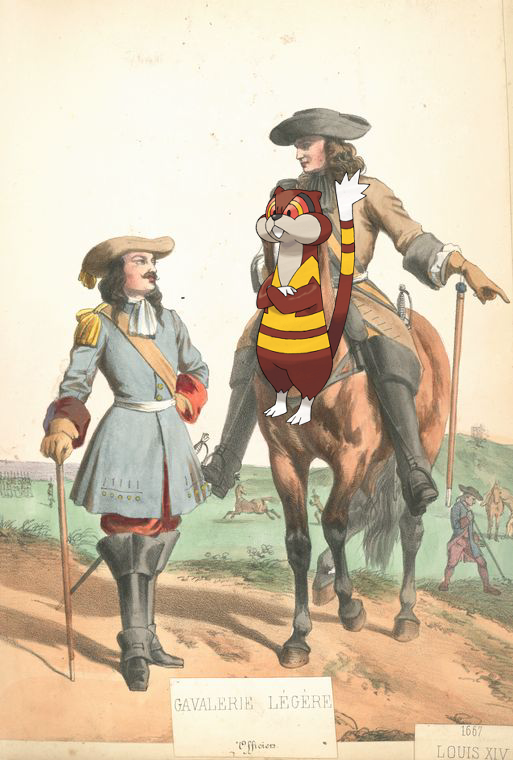
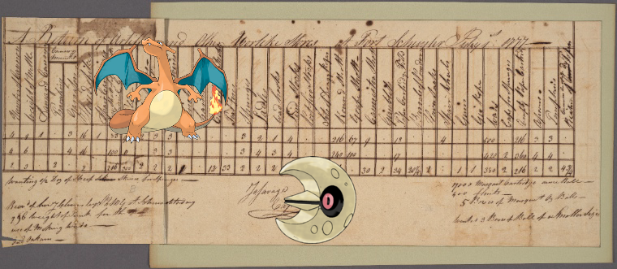
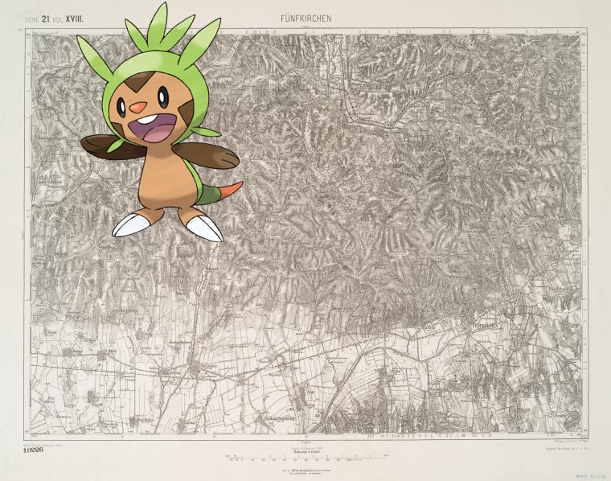
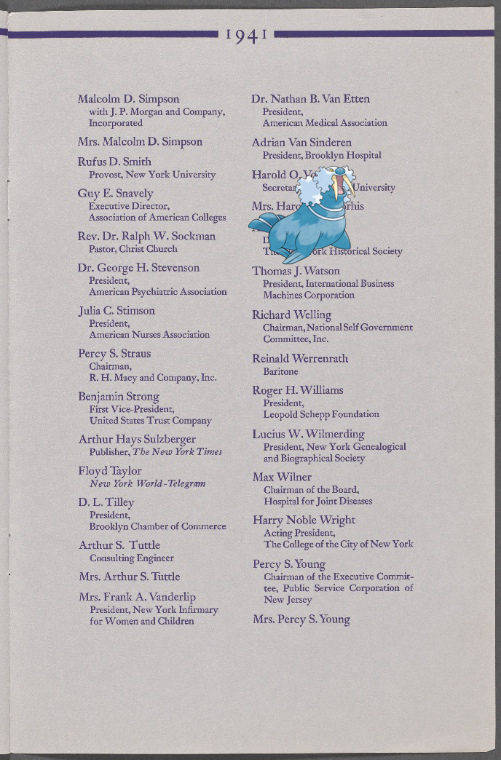
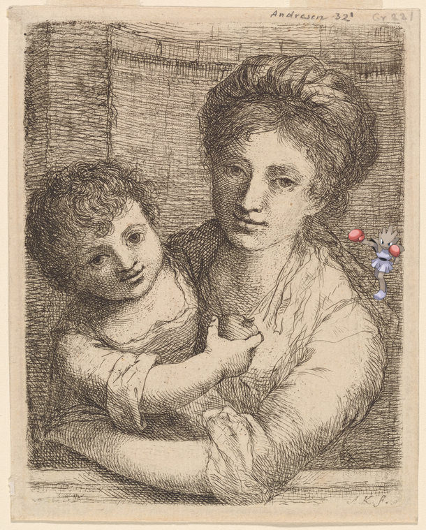
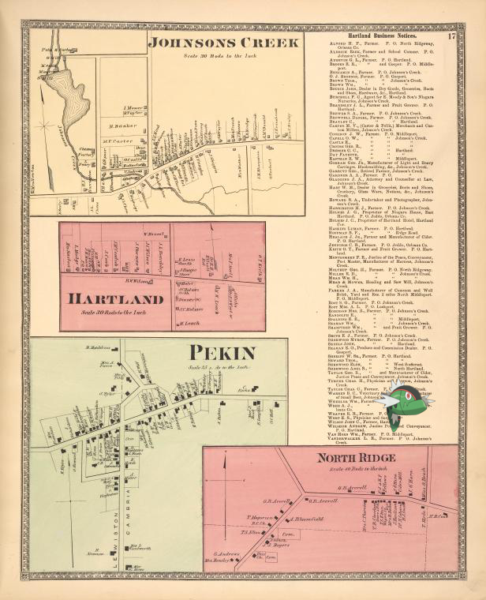
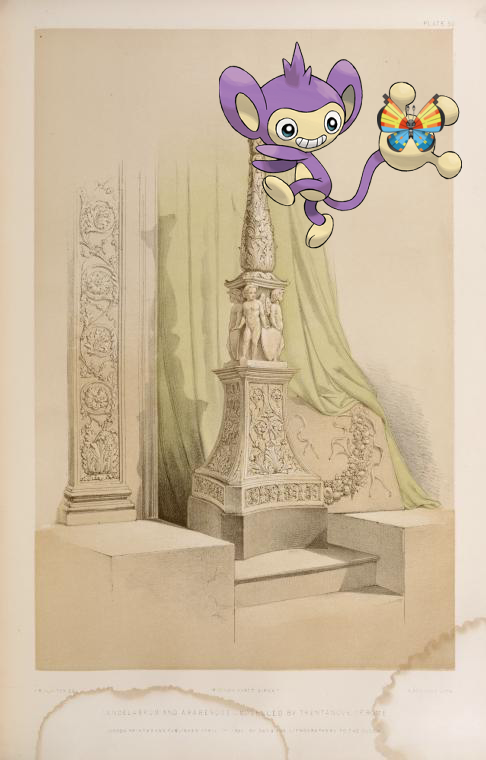
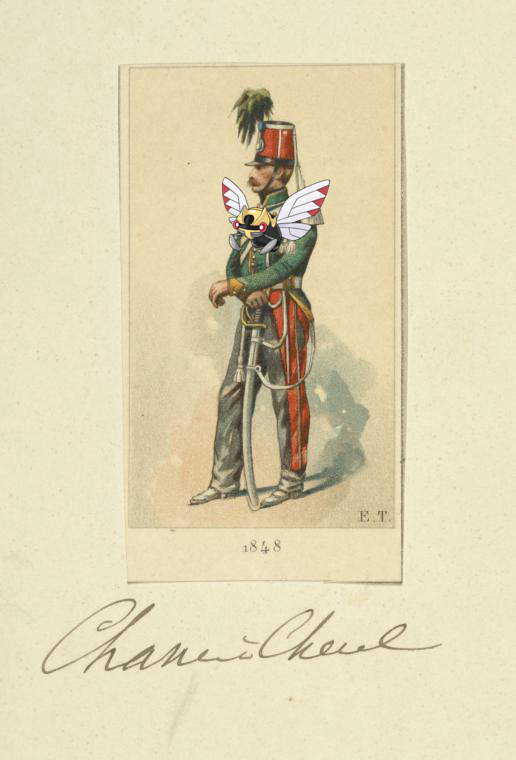

Pokémon in the NYPL archives
2018-1-23 09:41:05
France, 1897-1904">
on
France, 1897-1904
2018-1-23 09:32:55
France, 1650-1678. Louis XIV.">
Watchog on
France, 1650-1678. Louis XIV.
2018-1-23 09:17:28
Document">
Charizard, Lunatone –
Document
2018-1-23 09:15:59

undefined
2018-1-23 09:11:40

undefined
2018-1-23 08:10:14

Hitmonchan – Half-length portrait of a woman, with a child holding an apple.! http://digitalcollections.nypl.org/items/d73d70f0-0e0f-0133-e525-58d385a7b928
2018-1-23 06:10:04

Basculin-Red-Striped on Johnsons Creek [Village]; Hartland [Village]; Pekin [Village]; North Ridge [Village]; H… http://digitalcollections.nypl.org/items/741f8030-c5f9-012f-9e1a-58d385a7bc34
2018-1-23 04:10:04

Aipom, + Candelabrum and arabesque - modelled by Trentanove of Rome.. http://digitalcollections.nypl.org/items/638f5050-c6ba-012f-bf16-58d385a7bc34
2018-1-23 02:10:05

Ninjask ; France, 1848 http://digitalcollections.nypl.org/items/b5bf8560-c53a-012f-b3b3-58d385a7bc34
2018-1-23 00:10:12
Dedenne ; Your Liberty Bond will help stop this - Sus bonos de la libertad ayudarán á dar fin con esto http://digitalcollections.nypl.org/items/eb581510-86ac-0131-b09c-58d385a7bbd0
2018-1-22 22:10:06
Altaria – Scroll 2, scene 5. http://digitalcollections.nypl.org/items/67700b90-c6d5-012f-73d6-58d385a7bc34
0